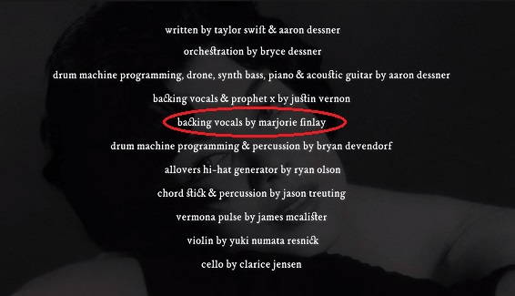

Never be so kind, you forget to be clever
Never be so clever, you forget to be kind
And if I didn't know better
I'd think you were talking to me now
If I didn't know better
I'd think you were still around
What died didn't stay dead
What died didn't stay dead
You're alive, you're alive in my head
What died didn't stay dead
What died didn't stay dead
You're alive, so alive
Never be so polite, you forget your power
Never wield such power, you forget to be polite
And if I didn't know better
I'd think you were listening to me now
If I didn't know better
I'd think you were still around
What died didn't stay dead
What died didn't stay dead
You're alive, you're alive in my head
What died didn't stay dead
What died didn't stay dead
You're alive, so alive
The autumn chill that wakes me up
You loved the amber skies so much
Long limbs and frozen swims
You'd always go past where our feet could touch
And I complained the whole way there
The car ride back and up the stairs
I should've asked you questions
I should've asked you how to be
Asked you to write it down for me
Should've kept every grocery store receipt
'Cause every scrap of you would be taken from me
Watched as you signed your name Marjorie
All your closets of backlogged dreams
And how you left them all to me
What died didn't stay dead
What died didn't stay dead
You're alive, you're alive in my head
What died didn't stay dead
What died didn't stay dead
You're alive, so alive
And if I didn't know better
I'd think you were singing to me now
If I didn't know better
I'd think you were still around
I know better
But I still feel you all around
I know better
But you're still around